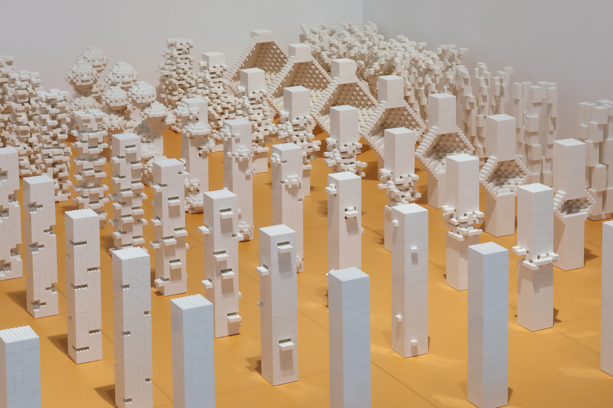
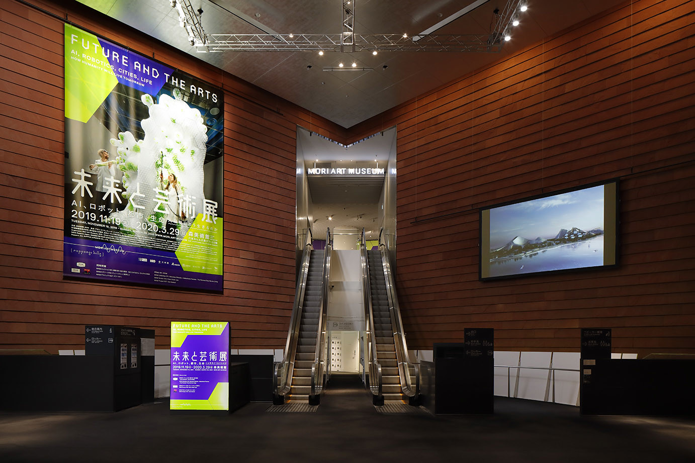
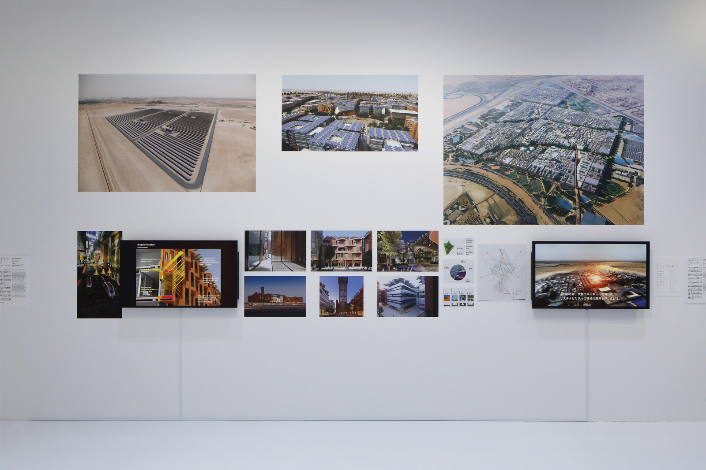
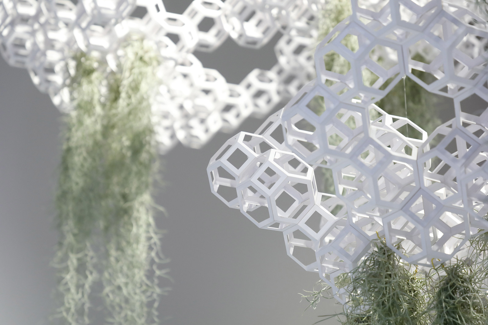
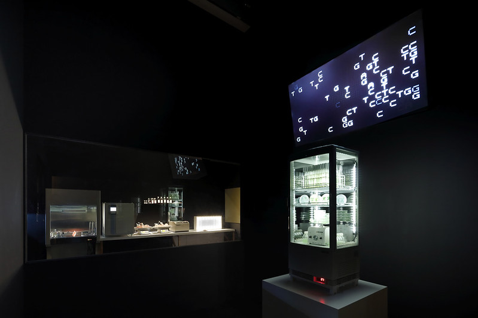
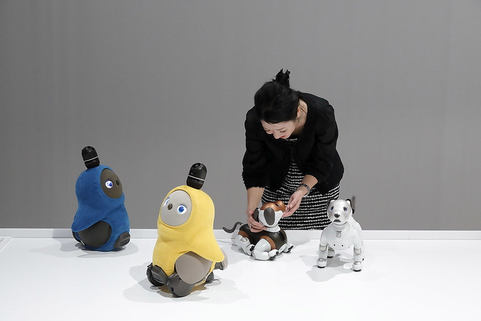

How will humanity live tomorrow? Future and the Arts: AI, Robotics, Cities, Life was a major survey exhibition at Mori Art Museum in Tokyo that brought together over 100 projects to examine how transformative technologies are already reshaping the conditions of human life. Artificial intelligence, biotechnology, robotics, and augmented reality were not presented as abstractions but as forces actively remaking cities, bodies, and societies — and the exhibition asked what values and choices would determine their outcomes.
The show was organised into five sections: new possibilities for cities; neo-metabolism architecture; lifestyle and design innovation; human augmentation and its ethical dimensions; and the broader transformation of society and human identity. The exhibition included over 70 participants, including Bjarke Ingels Group, WOHA, MAD Architects, Foster + Partners, Memo Akten, Rafael Lozano-Hemmer, Simon Denny, Neri Oxman, Patricia Piccinini, Ishiguro Lab, Patrick Tresset, Daan Roosegaarde, Vincent Fournier, Amy Karle, Pomeroy Studio, and Oron Catts and Ionat Zurr.
The exhibition drew on the conviction that art, design, and architecture can make these futures thinkable in ways that data and policy alone cannot. Alongside speculative and critical works, it presented proposals that were genuinely generative: alternatives to how cities might be built, how bodies might be augmented, how communities might be organised. Future and the Arts ran at Mori Art Museum from November 2019 to March 2020, and was curated by Nanjo Fumio, Kondo Kenichi, and Tokuyama Hirokazu of Mori Art Museum, together with Honor Harger.

Nanjo Fumio · Kondo Kenichi · Tokuyama Hirokazu · Honor Harger
Bjarke Ingels Group · WOHA · MAD Architects · Foster + Partners · Memo Akten · Rafael Lozano-Hemmer · Simon Denny · Neri Oxman · Patricia Piccinini · Ishiguro Lab · Patrick Tresset · Daan Roosegaarde · Vincent Fournier · Amy Karle · Pomeroy Studio · Oron Catts & Ionat Zurr · and 50+ further participants
Mori Art Museum, Tokyo




